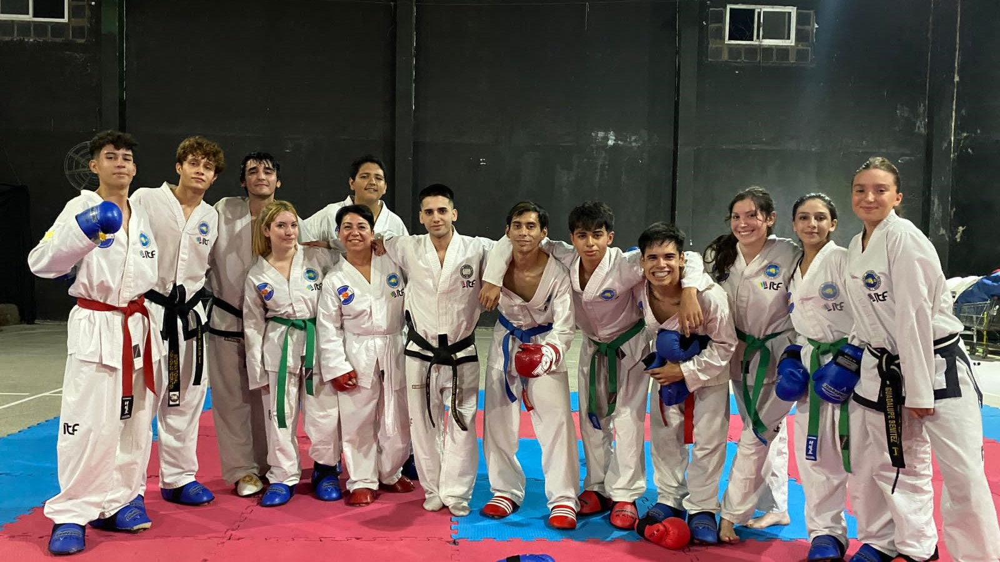
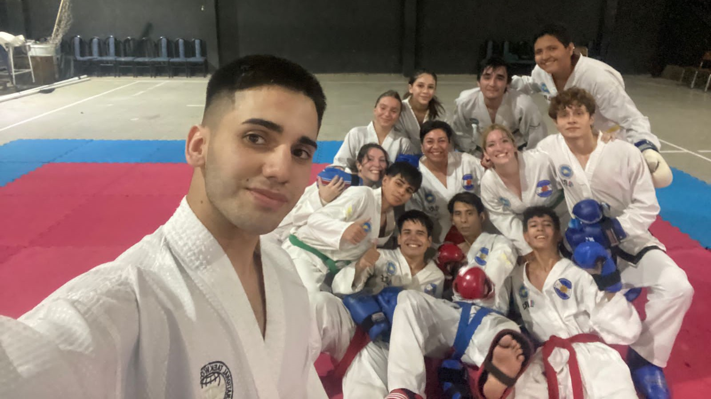

- 

- 
¡Saludos! Les presentarlo el "Team Golden Glory", un equipo dedicado a la excelencia en Taekwondo ITF. Desde nuestras raíces profundamente arraigadas en la disciplina y la pasión por el deporte, hasta nuestros éxitos en el tatami, estamos comprometidos con la búsqueda constante de la grandeza.
En Team Golden Glory, no solo entrenamos para competir, sino también para crecer como individuos y como equipo. Nuestra filosofía se basa en los principios fundamentales del Taekwondo ITF: cortesía, integridad, perseverancia, autocontrol y espíritu indomable. Estos valores no solo nos guían en la práctica del Taekwondo, sino también en nuestras vidas diarias.
Team Golden Glory está compuesto por atletas dedicados y apasionados que representan lo mejor del Taekwondo ITF. Desde nuestros más jóvenes aspirantes hasta nuestros veteranos experimentados, cada miembro aporta su propio talento, determinación y espíritu de equipo a nuestra familia.
En Team Golden Glory, el entrenamiento es la clave de nuestro éxito. Nos esforzamos por alcanzar la excelencia a través de sesiones rigurosas que abarcan técnicas de patadas, formas, combate y acondicionamiento físico. Además, valoramos la innovación y la adaptabilidad, siempre buscando nuevas formas de mejorar y evolucionar en nuestro arte.
A lo largo de nuestra trayectoria, Team Golden Glory ha cosechado numerosos éxitos en competiciones locales, nacionales e internacionales. Desde campeonatos individuales hasta victorias por equipos, hemos demostrado nuestra destreza y dedicación en el tatami, ganándonos el respeto y la admiración de nuestros compañeros competidores.
Además de nuestro enfoque en la competencia, Team Golden Glory también se compromete a devolver a la comunidad. Participamos activamente en eventos benéficos, programas de mentoría y actividades de servicio comunitario, utilizando nuestro amor por el Taekwondo como una herramienta para inspirar y empoderar a otros.
En resumen, Team Golden Glory es mucho más que un equipo de Taekwondo ITF; somos una familia unida por nuestra pasión compartida por el arte marcial, el compañerismo y el compromiso con la excelencia. Estamos emocionados de continuar nuestro viaje, enfrentando desafíos, celebrando victorias y dejando una huella positiva en el mundo del Taekwondo y más allá.